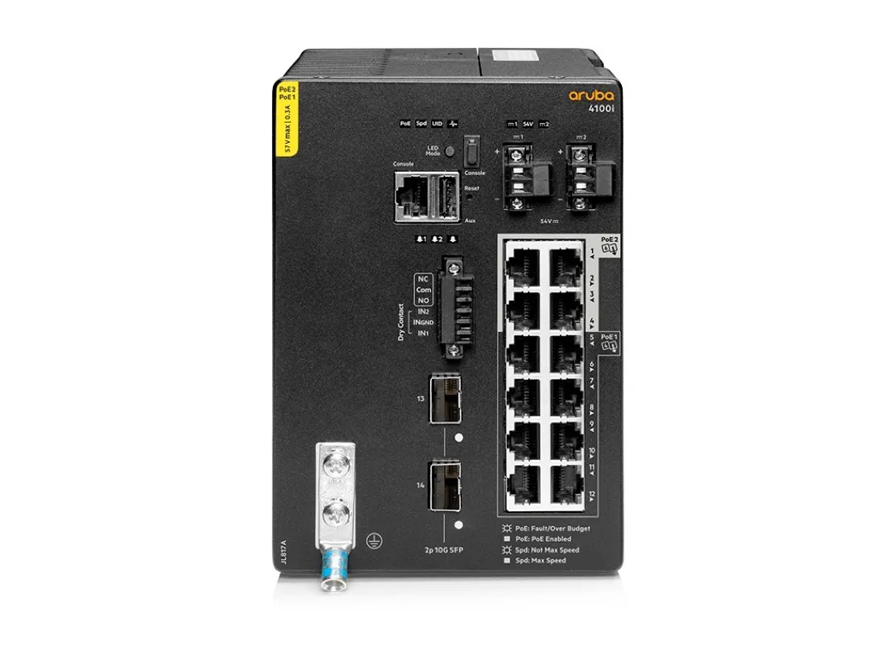

Ethernet: Là một dạng trong nhóm các công nghệ dùng để kết nối các thiết bị cục bộ. Hiểu đơn giản, giao thức này sẽ hỗ trợ những thiết bị như máy tính, tivi, laptop,… có thể kết nối mạng đồng thời được phép truyền dữ liệu đến thiết bị khác.
Với đặc điểm về tốc độ truyền hoặc nhận dữ liệu tương đối tốt, khả năng bảo mật và độ tin cậy cao, thế nên Ethernet được sử dụng khá phổ biến ở nhiều môi trường như bệnh viện, công ty, văn phòng, trường học. Ngoài ra, đối với công nghệ này sẽ được chia ra làm từng khung và phân luồng dữ liệu thành hai gói chính là địa chỉ nguồn và địa chỉ đích. Từ đó, người dùng có thể dễ dàng phát hiện các lỗi dữ liệu và yêu cầu truyền lại.
➜ Nói dễ hiểu Ethernet là cách các thiết bị trong mạng LAN nói chuyện với nhau thông qua dây mạng

🔌Cổng Ethernet: Là vị trí để người dùng cắm cáp vào thiết bị và thực hiện truyền tải dữ liệu khi cần. Đối với cổng Ethernet, bạn sẽ dễ dàng nhận biết hình dạng của nó là một lỗ cắm rộng hơn sạc điện thoại và được đặt tại vị trí bên hông hoặc phía sau thiết bị.
Về cơ bản, chức năng chính là kết nối các phần cứng mạng có hỗ trợ dây tương tự như một số hệ thống thông thường như WAN, LAN và MAN. Hiện nay, đa phần các thiết bị như máy tính, máy chơi game, tivi, TV Box… đều được trang bị loại cổng này để đáp ứng các nhu cầu của người dùng.
🔌Ethernet cable : Cáp Ethernet hay còn gọi là cáp mạng. Đây là loại cáp được sử dụng để kết nối các thiết bị mạng cục bộ (LAN) như máy tính, tivi, laptop, máy in, router,… với nhau. Loại cáp này hoạt động bằng cách truyền tải dữ liệu dưới dạng tín hiệu điện qua các lõi đồng được xoắn ốc bên trong cáp. Cáp Ethernet có nhiều loại khác nhau, được phân biệt dựa trên số lượng lõi, tốc độ truyền dữ liệu và chuẩn kết nối.
🔌Cách thức hoạt động của Ethernet: Cách Ethernet truyền dữ liệu bao gồm hai phần chính: lớp vật lý và lớp liên kết dữ liệu, thường được biết đến trong ngành là Layer 1 và Layer 2. Trong quá trình hoạt động, Ethernet sử dụng hai đơn vị truyền: gói và khung (Packet và Framework), theo mô hình giao thức mạng OSI. Mỗi khung dữ liệu cần được đặt trong một gói, chứa một số byte thông tin cần thiết để thiết lập kết nối và xác định vị trí. Khung dữ liệu chứa dữ liệu được truyền, địa chỉ vật lý, thông tin sửa lỗi và cài đặt VLAN.
🔌Các loại cáp Ethernet phổ biến:
- Cáp CAT5E: Là loại cáp có thể truyền tải dữ liệu vô cùng tối ưu lên đến 1000 Mbps, điều này giúp quá trình sử dụng của bạn trở nên thoải mái hơn. Ngoài ra, loại cáp này còn có đặc tính ưu việt là ít nhiễm chéo giúp quá trình mượt mà và luôn ổn định.
- Cáp CAT6: điểm nổi bật có phần tương tự với loại cáp CAT5E đều mang đến người dùng trải nghiệm ổn định. Tuy nhiên, CAT6 lại có băng thông gấp 2,5 lần so với CAT5E (cụ thể là 250 MHz) giúp bạn có thể trải nghiệm toàn bộ quá trình luân chuyển dữ liệu tối ưu hơn.
- Cáp CAT6A: Là cáp hiện đại nhất hiện nay, băng thông đạt mức 500 MHz gấp đôi so với CAT6 và trong phạm vi 100m, CAT6A sẽ hỗ trợ khả năng truyền tín hiệu lên đến 1000 Mbps..
? Vậy Ethernet xài cho mạng WAN được không
Câu trả lời là Được nhưng ít dùng tại bản chất Ethernet là dùng trong mạng LAN, nếu muốn xài ngoài phạm vi LAN thì phải sử dụng tuân thủ theo 1 số quy tắc mới xài được
➜ Tóm lại xài được nhưng ít ai dùng nếu dùng sẽ nâng cấp dùng mới hiệu quả